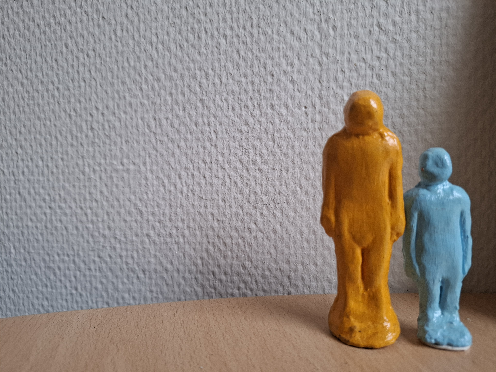
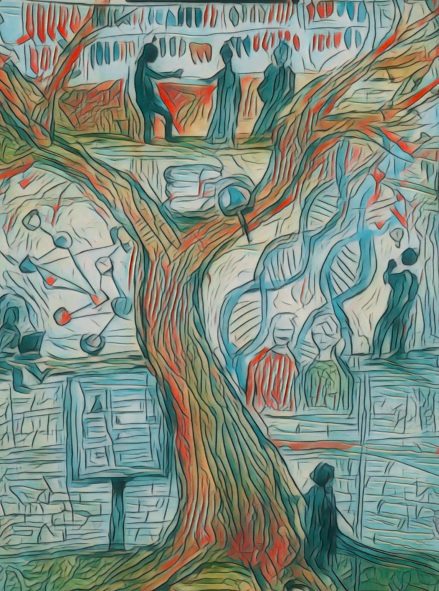
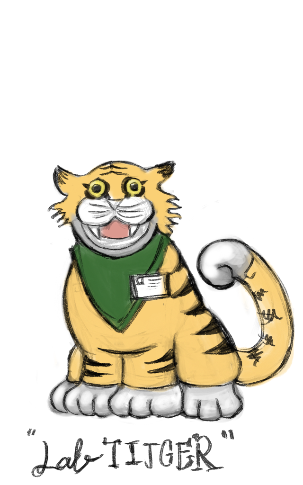
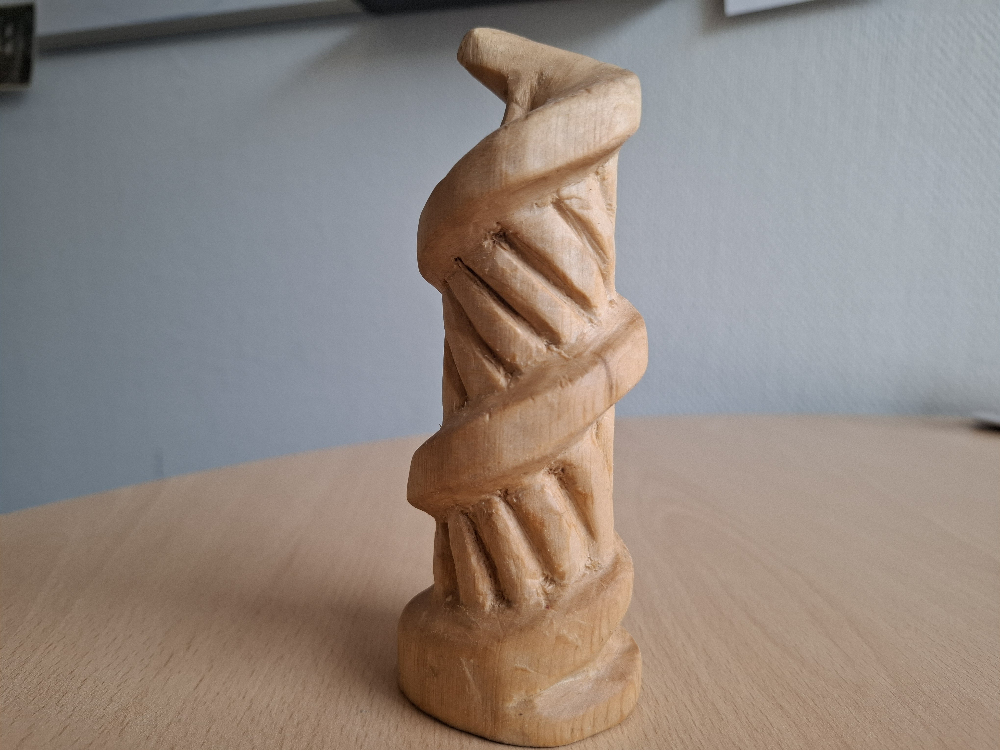
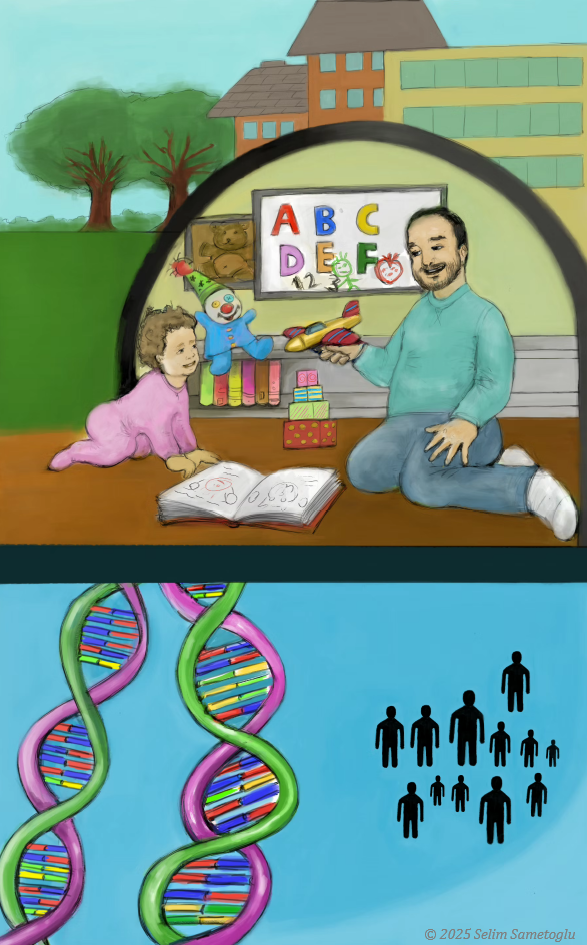
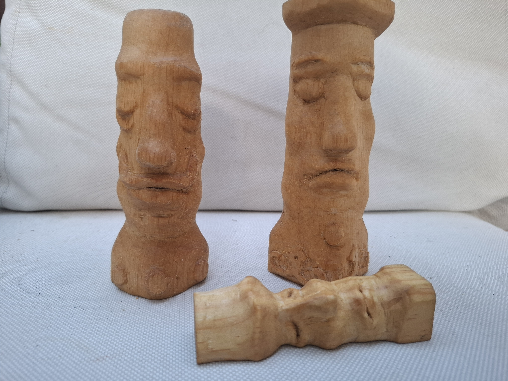
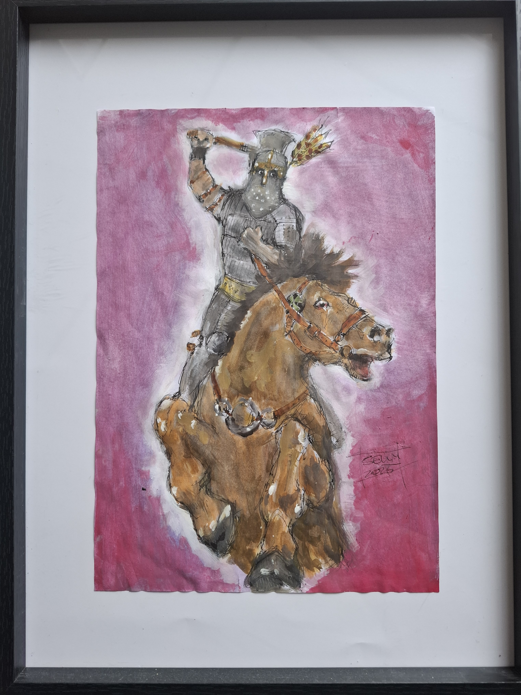

Artwork
Artwork and creative projects
This page brings together some of my creative work, including woodcarving, painting, drawings, and visual materials made for teaching, presentations, and science communication.
I see these projects as another way of exploring ideas, stories, and forms; sometimes connected to my academic work, and sometimes simply made for the joy of creating.

"Individual Differences"
These are two clay figurines I made for my thesis, using the same colours as my doctoral thesis. The figurines represent the very core of my research, as well as its starting point: “individual differences.”

"My (doctoral) journey depicted"
As the title suggests, my doctoral journey is depicted in this painting. At the heart of the journey stands a tree, and I appear as a “stick” figure at different points along the way: sometimes with my laptop, sometimes next to a double helix, drawing inspiration, and sometimes surrounded by a network of variables. At the very top, I eventually reach a library where other thinkers discuss both new and old ideas, while the branches of the tree continue to rise into the sky, representing the beginning of a new journey.

"LabTIJGER logo idea"
As soon as I started my postdoctoral work at the Max Planck Institute in Nijmegen, I quickly became interested in designing logos and promotional materials for each of the studies I lead or co-lead. The LabTIJGER logo is one of these, and it is a design I felt especially enthusiastic about. I love its slightly creepy eyes!

"The double helix"
My two passions come together here in one form: genetics and woodcarving. What more is there to say?

"Nature and nurture"
I love this one. This is one of the first images I used in my teaching activities. I often use it to illustrate how both genes and the environment are important for explaining variation in our development. And, of course, the models in this picture are none other than my son and me!

"Nature and nurture"
Three sleeping heads. As simple as this.

"Rider from the east"
My first every 'successful Frazetta-esque' work. Other than that, my father also likes it, I do, too.